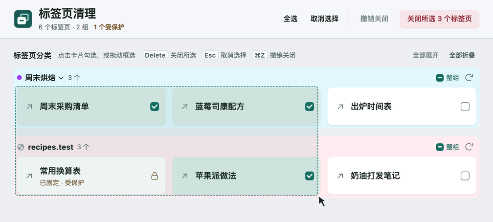

批量关闭标签页，保留固定页
Tab Manager 是一款适用于 Chrome 和 Ego Lite 的标签页清理扩展。它汇总当前浏览器个人资料里的各个窗口，保留已有的标签页分组，其余按域名归类。

安装扩展
- 下载 ZIP 并解压。
- 在 Chrome 或 Ego Lite 打开
chrome://extensions，开启「开发者模式」。 - 点击「加载未打包的扩展程序」，选择包含
manifest.json的目录。
选中一批再关闭
- 从浏览器工具栏打开「标签页清理」。
- 拖动框选、单击卡片，或勾选组名旁的「整组」。
- 核对后点击「关闭所选」。扩展会跳过固定页。
Bulk-close tabs in Chrome and Ego Lite
Tab Manager shows tabs from all normal windows in your current browser profile. It preserves browser tab groups and groups the remaining tabs by domain. Drag across the tab grid to select tabs, then click Close selected (关闭所选). Pinned tabs stay open.
Read the English FAQ